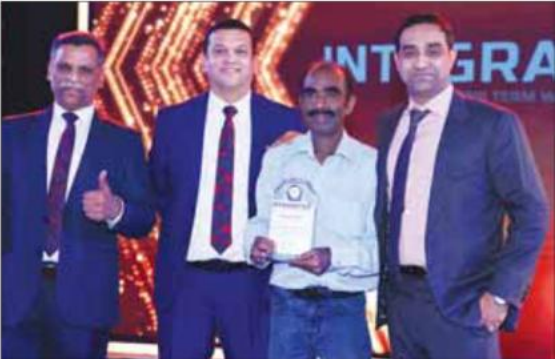
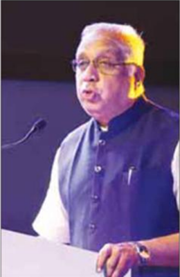

இன்டக்ரேட்டட் பொன்விழா கொண்டாட்டம்... முதலீட்டாளர்களுக்குப் புதிய சேவைகள் அறிமுகம்..
நி திச் சேவை நிறுவனங்களில் முன்னோடியாக விளங்கும் இன்டக்ரேட்டட் (Integrated) நிறுவனம் அண்மையில் தனது பொன்விழாவை சென்னையில் கொண்டாடியது. பி.வைத்தியநாதனால் நிறுவப்பட்ட இந்த நிறுவனம், இன்று 160-க்கும் மேற்பட்ட கிளைகளுடன் இந்தியா முழுவதும் பரவி, முதலீட்டாளர்களுக்கு நீடித்த செல்வம் உருவாக்கி அவர்களின் எதிர்காலத்தைப் பாதுகாக்கும் முக்கிய நிதி நிறுவனமாக வளர்ந்துள்ளது.
இன்டக்ரேட்டட் நிறுவனத்தின் முக்கிய தத்துவமான ஜி.ஐ.பி அதாவது வளர்ச்சி, வருமானம் மற்றும் பாதுகாப்பு அணுகுமுறை (GIP - Growth, Income, and Protection) வாடிக்கை யாளர் தேவைகளை சமநிலையுடன் பூர்த்தி செய்யும் தனிப்பட்ட தீர்வுகளை வழங்குகிறது. பங்குச் சந்தை, கடன் சந்தை மாற்றங்களுக்கும் முதலீட்டாளர்களின் இலக்குகளுக்கும் ஏற்ப சரியான தீர்வுகளை வழங்குவதில் இந்த நிறுவனம் உறுதியாக உள்ளது.
பொன்விழாவில் உலக அளாவிய விரிவாக்கம் சார்ந்த புதிய முயற்சிகளின் ஒரு பகுதியாக, என்.ஆர்.ஐ வெல்த் ப்ளஸ் (NRI Wealth Plus) மற்றும் சக்தி ப்ளஸ் (Shakti Plus) எனும் சேவைகள் அறிமுகப்படுத்தப் பட்டன.

எல்.சுதாகர், செல்வகுமார், சி.சரவணன், ஸ்ரீராம் வைத்தியநாதன்
என்.ஆர்.ஐ வெல்த் ப்ளஸ்: உலகம் முழுவதும் உள்ள வெளிநாட்டு இந்தியர் களுக்கான சிறப்பு சேவை; இது அவர்களின் செல்வ மேலாண்மை மற்றும் வளர்ச்சிக்கான தனிப்பட்ட தீர்வுகளை வழங்குகிறது.
சக்தி ப்ளஸ்: பெண்களால், பெண்களுக்காக உருவாக்கப்பட்ட சிறப்புப் பொருளாதார சேவை; இது மகளிர் நிபுணர்கள் குழுவால் பெண்களுக்குத் தனிப்பட்ட முதலீட்டுத் தீர்வுகளை வழங்குகிறது.
நிறுவனத்தின் தலைவர் ஸ்ரீராம் வைத்திய நாதன் புதிய சேவைகள் குறித்து பேசுகையில், "இந்த 50 ஆண்டுகள் முழுவதும் எங்கள் முதலீட்டாளர்களின் நம்பிக்கையும், எங்க

பி.வைத்தியநாதன்
ஆர்.தியாகராஜன்
காமகோடி
ஊழியர்களின் அர்ப்பணிப்பும், பரந்த தொழில் கூட்டாளர்களின் ஒத்துழைப்பும் எங்கள் வெற்றியின் அடித்தளமாக இருந்தன. அவர்களின் ஆதரவை மனமாரப் பாராட்டு கிறேன். புதிய சேவைகளின் அறிமுகம் மூலம், நாங்கள் புதிய திறன்களை ஆராய்ந்து, உலகளாவிய அளவிலும் வளர்ச்சி பெறுகிறோம்” என்றார்.
இந்தப் பொன்விழா நிகழ்வு தொழில் கூட்டாளர்கள், பங்குதாரர்கள் மற்றும் ஊழியர்கள் அனைவரின் ஒற்றுமையை வரவேற்கும் விதமாகவும், நன்றி தெரிவிப்பு கொண்டாட்டமாகவும் அமைந்தது.
இன்டக்ரேட்டட் நிறுவனத்துடன் நாணயம் விகடன் இதழ் இணைந்து பல்வேறு முதலீட்டாளர்கள் நிகழ்ச்சியை தமிழகம் முழுக்க நடத்தியது. அதற்கான பாராட்டும் நன்றியும் தெரிவிக்கப்பட்டது. இதற்கான ஷீல்டை இன்டக்ரேட்டட் நிறுவனத்தின் தலைவர் ஸ்ரீராம் வைத்தியநாதன், முதன்மை சந்தைப்படுத்துதல் அதிகாரி மற்றும் முழு நேர இயக்குநர் செல்வகுமார், ஆல்டர்நேட் சேனல் தலைவர் எல்.சுதாகர் ஆகியோர் இணைந்து வழங்க நாணயம் விகடன் நிர்வாக ஆசிரியர் சி.சரவணன் பெற்றுக்கொண்டார்.
இன்டக்ரேட்டட் 50 ஆண்டு பயணத்தின் ஒரு பகுதியாக இருந்த அனைவருக்கும் நன்றி தெரிவிக்கிறேன். எதிர்காலத்தில் இன்னும் பல சிறந்த வாய்ப்புகளை உருவாக்க நாம் இதேபோல் இணைந்து முன்னேறுவோம்” என பி.வைத்தியநாதன் தெரிவித்தார்.
இந்த விழாவில் சிட்டி யூனியன் வங்கியின் தலைவர் காமகோடி பேசும்போது, "கும்பகோணம் டிகிரி காபி எவ்வளவு பிரபலமாக இருக்கிறதோ, அந்த அளவுக்கு இன்றைக்கு நிதிச் சேவை அளிப்பதில் இன்டக்ரேட்டட் சிறந்து விளங்குகிறது” என்றார்.
ஸ்ரீராம் குழுமத்தின் தலைவர் ஆர்.தியாகராஜன், “இன்டக்ரேட்டட் நிறுவனத்தில் 52 சதவிகிதப் பெண்கள் பணி புரிகிறார்கள். அதற்காக அதன் தலைவர்களை நிச்சயம் பாராட்ட வேண்டும்” என்றார். நீங்களும் வாழ்த்துங்களேன்..!
-நாணயம் விகடன் டீம்